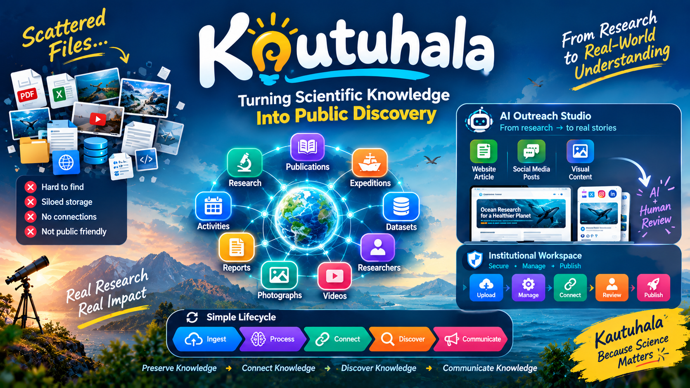

Makes knowledge easy to discover
Research, expeditions, datasets, publications, photos, videos, and activities are organized and connected, so users can see how they relate to one another.
Selected Project
Turning Scientific Knowledge Into Public Discovery
An intelligent scientific knowledge and outreach platform. It brings an institution's scattered reports, datasets, photographs, videos, and expedition records into one connected, searchable space, and uses AI to turn research into stories the public can understand.

Research institutes hold thousands of files spread across websites and storage systems. Finding the right information is hard, and turning valuable research into something the general public can follow takes a lot of manual work.
Research, expeditions, datasets, publications, photos, videos, and activities are organized and connected, so users can see how they relate to one another.
AI turns an authoritative research report into a website article, social-media posts, and visual content. An administrator reviews it before publishing.
Search finds what is relevant. Relationships reveal what is connected.
Example path: Publication → Expedition → Dataset → Researcher → Related Research → Media.
A reader-friendly article written from the original report.
Platform-specific text for each channel.
Graphics for social media.
AI works from the institution's stored source material; the LLM is never treated as the source of truth. Every output goes through Generate → Review → Edit → Approve → Publish.
| Layer | Technology |
|---|---|
| Frontend | Vanilla JS |
| Backend | FastAPI (modular monolith) |
| Database | PostgreSQL |
| Search | pgvector, pg_trgm |
| AI | Python AI / LLM stack |
| Deployment | Docker |